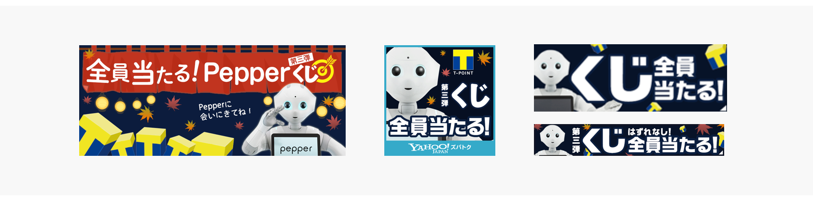

ポイントサイトリニューアル
2015

- 

- 概要
-
実店舗のpepperとWEB上で展開するキャンペーンが連動しており，「Pepper」の認知向上やソフトバンクショップへの来店促進につなげ，Yahoo! JAPANは、Tポイントが「Yahoo!ショッピング」をはじめとした自社サービスで利用できることを知ってもらうきっかけを提示することを目的とした．キャンペーン企画自体は、第3弾まで実施され，第一弾リリース当時はプレスに掲載された．
- 作業内容
-
キャンペーンのMV，使用時のフロー項目を作成．キャンペーン企画の始動時は夏本番だったので，夏らしい装いに．PhotoshopおよびIllustratorをデザイン作成時のツールとして用いた．また作業時間はレビューを含めて1週間を要した．
- 学び
-
中長期にまたがるコンテンツ・実店舗連動コンテンツに関われたこと．版権や他社が関わる場合，自社で作業が解決しなこと．